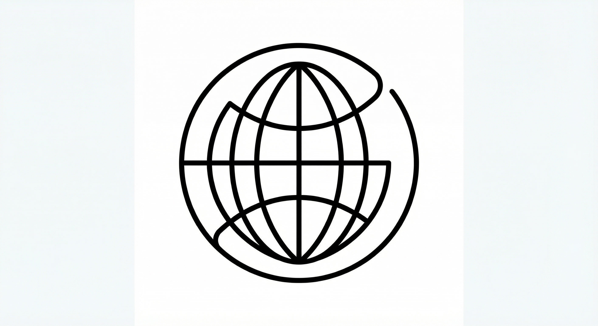
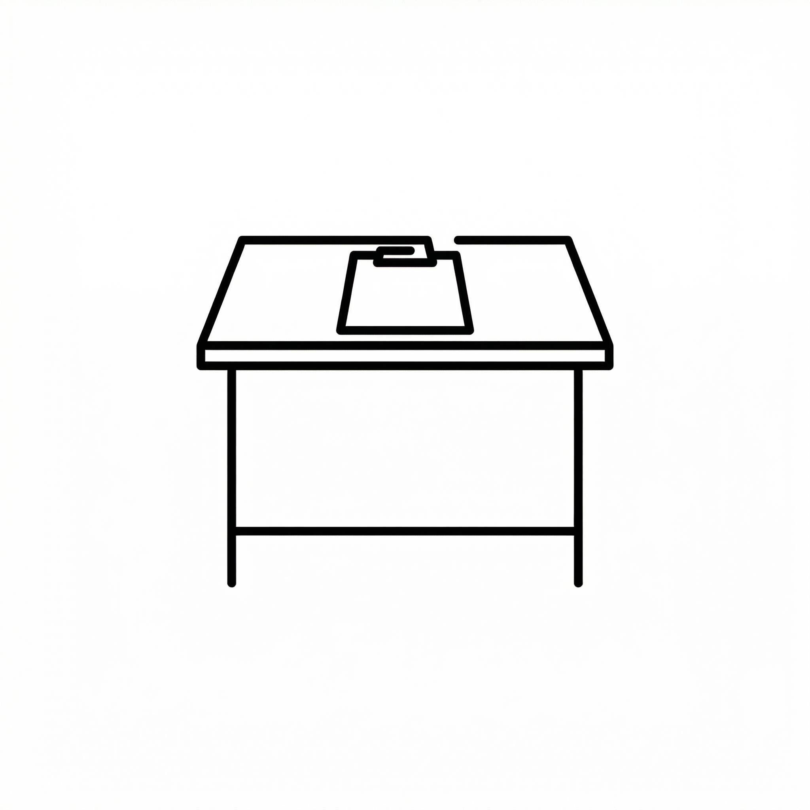
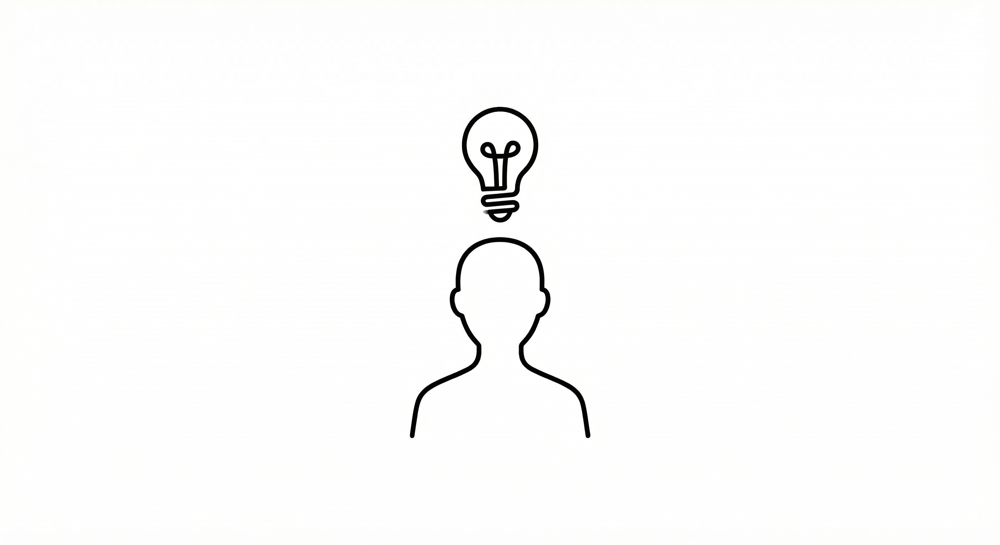

Pracuje AI pro vás?
Pomůžu vám najít konkrétní využití AI – bez zbytečného hype a bez technického žargonu. Ať jste vývojář, kancelářský pracovník nebo úplný začátečník.

Provozujete web
Chatboti pro zákaznickou podporu, automatizace obsahu, personalizace doporučení nebo vyhledávání. AI pomáhá webům lépe sloužit návštěvníkům a zároveň ulevit týmu od opakující se práce.

Děláte kancelářskou práci
Zpracování dokumentů, psaní e-mailů, sestavování reportů nebo analýza dat. Nástroje jako ChatGPT, Copilot a další umí výrazně zrychlit rutinní úkoly. Ukážu vám, jak na to a jak je bezpečně integrovat do vašeho workflow.

Nemáte s IT nic společného
AI není jen pro techniky. Vysvětlím vám srozumitelně, co umělá inteligence umí a neumí, jaké nástroje dávají smysl pro váš obor a jak se vyhnout častým chybám. Začínáme od nuly, bez žargonu.